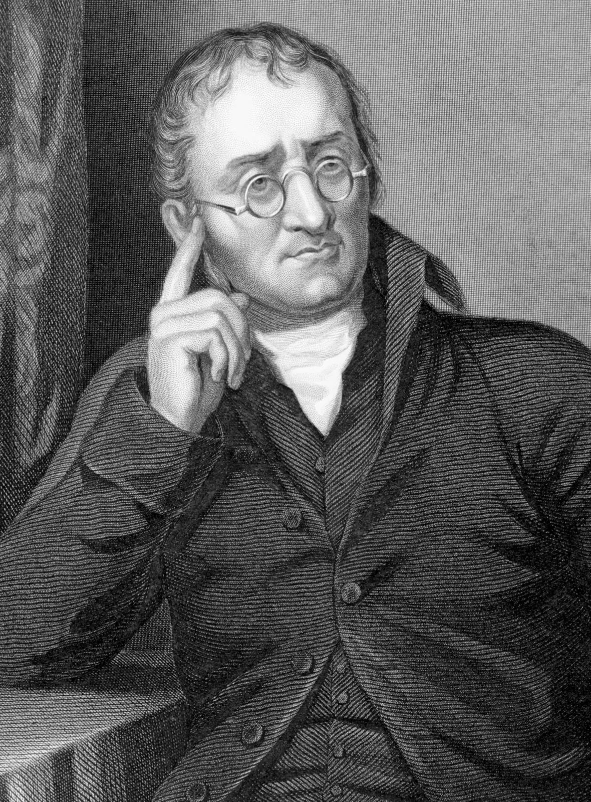

The Father of Atomic Theory
John Dalton This is a paragraph about John Dalton. His work was fundamental to the development of modern chemistry. He proposed that all matter is composed of atoms, which are indivisible and indestructible building blocks. While later discoveries would refine this view, his theory was a major step forward.
"This is a John Dalton quote"
Key Contributions
| Contribution | Year | Contribution |
|---|---|---|
| John Dalton | 1802 | He did things no one knew would be done |
| More John Dalton | 1803 | Achievment |
| John dalton achievment | 1800 | Information about John Dalton |